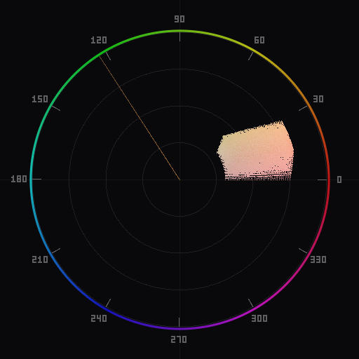
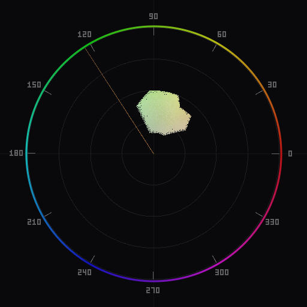

Skin Tone Correction Using a Vectorscope
The skin tone reference line is the single most useful feature on a vectorscope for portrait photographers. Here is how it works and how to use it.

A well-exposed portrait with accurate white balance. The skin tone pixels cluster along the reference line.
The skin tone line explained
On a YCbCr vectorscope, the skin tone line is a reference mark drawn at approximately 123 degrees from the positive Cb axis (or equivalently, about 11 o'clock on the circular display). This line was standardized decades ago in the broadcast television industry, where color-accurate reproduction of human skin was considered the single most critical measure of a signal's fidelity.
The line does not represent one specific color. It marks a hue angle -- the direction from the center of the vectorscope toward the warm orange-yellow region. Any pixel whose chrominance falls on or very near this angle is registering a hue consistent with human skin. Pixels that fall far from this angle have a hue that will look unnatural when rendered as skin.
On an HSL-based vectorscope, the same principle applies, but the angle shifts because the color space maps hue differently. The skin tone region falls in the orange/warm area, roughly between 15 and 35 degrees on an HSL hue wheel. Regardless of color space, the underlying observation is the same: human skin occupies a narrow band of hue.
If you are new to reading a vectorscope, start with our guide to reading a vectorscope for the fundamentals of hue, saturation, and chrominance distribution.
Why all skin tones share one angle
This is the part that surprises most photographers encountering a vectorscope for the first time. Every human being -- regardless of ethnicity, age, or complexion -- has skin that falls on approximately the same hue angle. The difference between lighter and darker skin tones is primarily a matter of saturation and luminance, not hue.
The biology behind this is straightforward. Human skin color is determined almost entirely by two pigments: eumelanin (brown-black) and pheomelanin (red-yellow). Both absorb and reflect light in a way that produces the same underlying warm hue. Lighter skin contains less melanin overall, which results in lower saturation -- the chrominance point sits closer to the center of the vectorscope. Darker skin contains more melanin, producing slightly higher saturation, pushing the point further from center. But the angle stays the same.
This is why the skin tone line works as a universal reference. You do not need different reference marks for different subjects. If you photograph a group of people with widely different complexions under the same light, their skin tones will all cluster along the same radial line on the vectorscope. The cluster will be elongated (spanning from near-center to further out), but it will be narrow in the angular direction.
This narrow angular spread is what makes the vectorscope such a sensitive detector of skin tone problems. Even a small color cast -- one that might be hard to see by eye on a calibrated monitor -- will visibly shift the cluster off the reference line.
Common skin tone problems
Most skin tone issues fall into a few recognizable patterns on the vectorscope:

The same portrait with a green color cast from mixed lighting. The skin cluster has rotated away from the reference line.
Green shift from fluorescent or LED lighting. Mixed artificial lighting is the most common source of skin tone problems. Fluorescent lights with a poor CRI (color rendering index) add green to skin, rotating the vectorscope cluster counterclockwise away from the reference line (toward the yellow-green region). LED panels with a green spike produce the same effect. On the vectorscope, you will see the skin cluster sitting at a noticeably different angle than the reference mark.
Magenta shift from incorrect white balance. Over-correcting a warm scene -- or setting white balance too high a color temperature for the actual light -- pushes skin toward magenta. The vectorscope cluster rotates clockwise past the reference line. Skin looks unnaturally pink or ruddy.
Overall warm or cool cast. A white balance error that affects the entire image shifts the skin cluster off the reference line along with everything else. This is usually easier to diagnose because the entire chrominance distribution is offset, not just the skin. See our white balance guide for details on identifying and fixing this at the global level.
Reflected color from environment. A subject standing near a brightly colored wall or wearing a saturated garment may pick up reflected color on their skin. This is harder to fix globally because only part of the skin is affected. You will see the skin cluster widen angularly rather than shift uniformly.
Over-saturation from post-processing. Pushing vibrance or saturation globally extends the skin cluster further from center without changing the angle. This can look acceptable on a vectorscope, but the actual skin appearance becomes unrealistic -- waxy or sunburned. Watch the radial distance, not just the angle.
Fixing skin tones in Lightroom
With Chromascope running in Lightroom Classic, you can watch the vectorscope update in real time as you adjust sliders. This turns skin tone correction from guesswork into a precise, measurable process.
Step 1: Set white balance first. Before touching skin-specific adjustments, get the global white balance right. Use the vectorscope to center the overall chrominance distribution. Adjust the Temperature and Tint sliders until the bulk of the image's chrominance sits where you expect it. This alone often fixes skin tones, since most skin problems originate from incorrect white balance.
Step 2: Check the skin cluster. With the skin tone line overlay enabled, look at where skin pixels sit relative to the reference line. If the cluster is on the line, you are done. If it is off, note the direction and distance.
Step 3: Use HSL targeted adjustments. If white balance alone did not bring skin onto the reference line, open the HSL panel. The Orange and Yellow hue sliders have the most direct effect on skin tone. Shift the Orange hue slider to rotate the skin cluster toward the reference line. Small adjustments -- 3 to 8 units -- are usually sufficient. Go further and you will introduce artifacts where skin meets non-skin colors.
Step 4: Manage saturation. If skin looks flat despite being on the correct angle, increase the Orange saturation slightly. If skin looks overcooked, reduce it. The vectorscope shows this as movement toward or away from the center along the reference line.
Step 5: Verify with the scope. After adjustments, the skin cluster should sit on or within a few degrees of the reference line. The cluster should be relatively tight -- if it is spread across a wide angular range, you may have local color contamination that requires masking rather than global correction.
Fixing skin tones in Photoshop
Photoshop gives you more surgical tools for skin tone correction, which is useful when the problem is local rather than global.
Hue/Saturation adjustment layer. Add a Hue/Saturation adjustment layer. Select the Reds or Yellows channel (depending on the subject's complexion). Use the Hue slider to rotate the skin cluster toward the reference line on the vectorscope. This is the Photoshop equivalent of Lightroom's HSL hue sliders, and works well for global skin correction.
Selective Color adjustment layer. For finer control, use a Selective Color adjustment layer targeting Reds and Yellows. Adjusting the Cyan slider in the Reds channel shifts skin hue without affecting other colors as aggressively. Reduce Cyan in Reds to push skin warmer (toward the reference line when the shift is green), or increase it to pull skin cooler (when the shift is magenta).
Masked corrections for local problems. When reflected color or mixed lighting affects only part of the skin, create a mask to isolate the affected area. Select > Color Range with the eyedropper on the problematic skin area gives you a reasonable starting selection. Refine the mask edge, then apply a Hue/Saturation or Curves adjustment clipped to that mask. Watch the vectorscope as you adjust -- the skin cluster should tighten and rotate toward the reference line.
Curves in individual channels. For experienced users, RGB Curves on individual channels offers the most control. Pulling down the Green curve in the midtones corrects a green cast on skin. Pulling down Blue warms the image. The vectorscope provides immediate feedback on whether you are moving in the right direction and how far to go.
The key advantage of working with a vectorscope open is objectivity. Your eyes adapt to color casts after staring at an image for a few minutes. The vectorscope does not adapt. It shows you the actual chrominance data regardless of how long you have been editing.
Ready to try this workflow? Download Chromascope and enable the skin tone line overlay to start correcting with confidence. For a complete portrait editing workflow that builds on these techniques, see our guide to color grading portraits with a vectorscope.